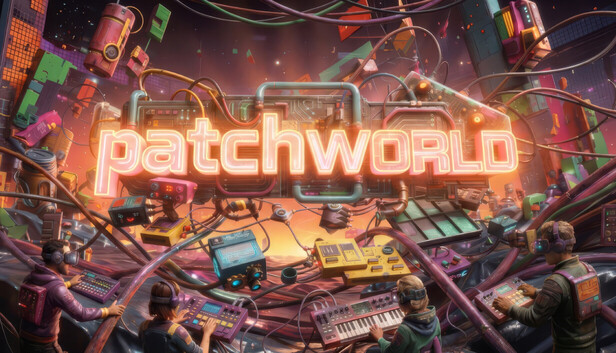
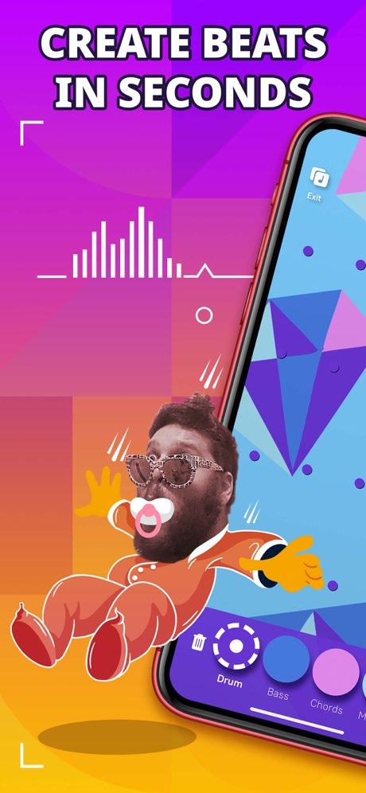

Music
Two decades of production, artist projects, and live performance. From Israeli hip-hop to electro-swing to experimental pop.
Voice of Gad · Dirty Honkers · Abagada · Full Catalogue
I build things that make music more expressive, more accessible, and stranger. Artist, producer, and music-tech builder — one ecosystem.
What I Do
Two decades of production, artist projects, and live performance. From Israeli hip-hop to electro-swing to experimental pop.
Music-creation platforms, apps, and instruments built for musicians. Things that didn't exist yet.
Shows, workshops, art installations and on-site events. Book Dirty Honkers, Voice of Gad, or a music tech workshop.
01 · Music Tech Startups
XR · Meta Quest
An immersive music-making platform for Meta Quest. Build worlds, make music, perform live in virtual reality. One of the most advanced spatial audio instruments available on any platform.


02 · Music Tech Startups
iOS · Android · Freemium
A playful mobile music-creation app. Make beats, jam with loops, share tracks — fun first, powerful second. Millions of people making music on their phones.
03 · Plugins & Tools
Plugins & tools for Ableton Live, VST, AU, and the web
Studio instruments and MIDI tools that work the way you actually compose. WaveRider, SuperScaler, ChordMaster, LiveQuantizer, ChopTube — each one solves something real.
@voiceofgad
04 · Live Music
Live looping · Vocal · Experimental
Voice-driven live performance built around character, rhythm, and real-time composition. Intimate, strange, and rhythmically dense. Growing on TikTok, moving into live venues.
Bookings, commissions, workshops, collaborations — all start with an email.
gbhinkis@gmail.com